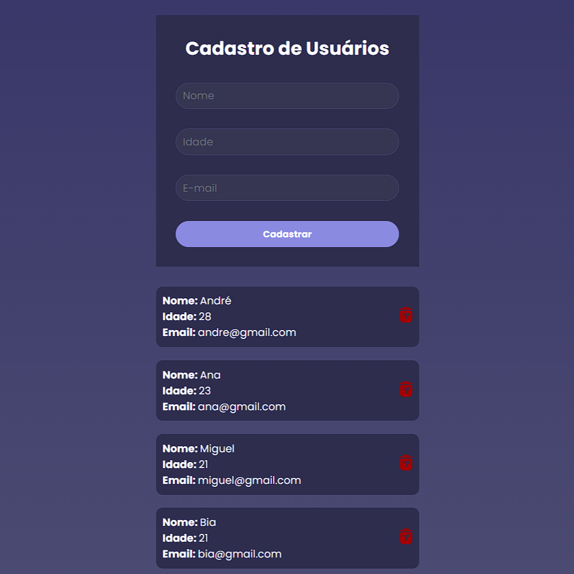

Olá, Eu sou Widson Martins.
Desenvolvedor front-end


Sobre mim
Com experiência em HTML, CSS, JavaScript, TypeScript e React. Possuo um forte compromisso com a aprendizagem contínua, comprovado por diversos cursos e certificações em tecnologias essenciais para o desenvolvimento web moderno e estou sempre buscando novas formas de melhorar a experiência do usuário em projetos digitais. Estou em busca de uma oportunidade para aplicar minhas habilidades e contribuir para o sucesso de projetos inovadores.
Curriculo (PDF) ======= >>>>>>> 8d36cd7fc5daa7524a19f24cc0195cc942c98839Meus projetos

Landing-page
<<<<<<< HEADEm grupo criei uma landing page responsiva e dinâmica como parte do programa Inova Maranhão, com foco em apresentar um jogo e coletar dados dos jogadores por meio de um formulário validado, garantindo uma experiência de usuário fluida em diferentes dispositivos.
======= >>>>>>> 8d36cd7fc5daa7524a19f24cc0195cc942c98839 Ver projeto
To-Do list
<<<<<<< HEADDesenvolvi uma lista de tarefas dinâmica utilizando HTML, CSS, Javascript e Typescript, com funcionalidades avançadas de filtragem e edição. O projeto melhora a produtividade dos usuários ao gerenciar suas tarefas de forma eficiente e intuitiva.
======= >>>>>>> 8d36cd7fc5daa7524a19f24cc0195cc942c98839 Ver projeto
Cadastro de usuários
<<<<<<< HEADDesenvolvi um sistema de cadastro de utilizadores utilizando React, Vite, Axios e Hooks, onde os utilizadores são cadastrados através de um formulário controlado por useRef. O projeto consome uma API externa para armazenar e listar os utilizadores de forma dinâmica, proporcionando uma experiência de atualização em tempo real e uma interface eficiente.
======= >>>>>>> 8d36cd7fc5daa7524a19f24cc0195cc942c98839 Ver projeto